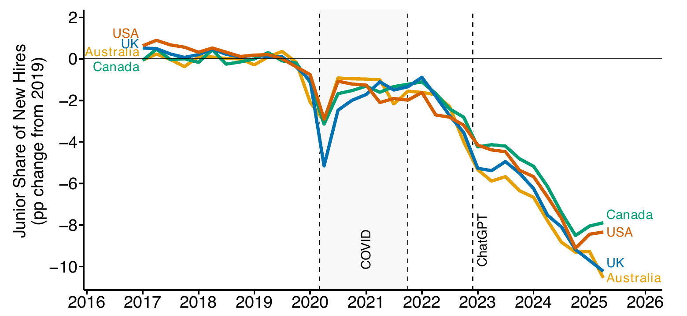
영미권 4개국에서 신입 채용 비중은 2022년 말 이후 2019년 대비 8~11%포인트 떨어졌습니다. 많은 연구가 이를 생성형 AI 탓으로 돌렸습니다.
그러나 AI 노출과 재택근무 노출은 직업 단위에서 상관계수 0.77로 거의 같이 움직입니다. 두 충격을 함께 분석에 넣으면 AI 효과는 0과 구분되지 않고, 재택근무 효과만 안정적으로 남습니다.
실제 재택근무를 도입한 기업도 신입 채용이 같은 폭으로 줄었습니다. 신입 채용 감소의 더 강한 예측 변수는 AI가 아니라 재택근무라는 결론입니다.
신입 채용이 줄어든 진짜 범인은 AI가 아닐 수 있습니다.
당신 조직의 재택근무 설계는 신입을 키울 수 있습니까?
"AI가 신입의 일자리를 빼앗는다." 지난 2년간 가장 많이 들린 노동시장 진단입니다. 링크드인 임원도, 주요 언론도 같은 결론을 냈습니다. 경영 리더 입장에서는 자연스러운 추론입니다. AI가 신입에게 맡기던 단순 분석 업무를 대신하니까요.
이 연구는 그 진단이 성급하다고 말합니다. AI 노출이 높은 직업과 재택근무 노출이 높은 직업이 사실상 같은 직업이기 때문입니다. 둘을 갈라내지 않으면 재택근무가 만든 변화를 AI 탓으로 오해하게 됩니다. 원인을 잘못 짚으면 처방도 빗나갑니다.
실제로 두 충격을 한 모형에 함께 넣자 결과가 갈렸습니다. AI의 신입 채용 감소 효과는 1.34에서 0.41%포인트로 줄며 통계적으로 사라졌습니다. 재택근무 효과만 그대로 남았습니다.
신입 채용 감소는 단순한 경기 문제가 아닙니다. 신입 자리는 조직이 미래의 경력직을 길러내는 통로입니다. 이 통로가 좁아지면 몇 년 뒤 중간 관리자 공급이 마릅니다. 원인이 AI라면 임금 보조나 세제 같은 강한 정책이 필요합니다. 원인이 재택근무라면 조직 운영 방식을 바꾸는 것으로 풀 수 있습니다. 어느 쪽이냐에 따라 당신이 내년에 손볼 레버가 완전히 달라집니다.
이 연구는 두 개의 대규모 데이터를 씁니다. 미국, 영국, 캐나다, 호주의 2017~2025년 데이터입니다. 신규 채용 2억 4,300만 건과 온라인 채용 공고 4억 700만 건을 분석했습니다. 신입 채용 비중과 "경력 3년 이하" 공고 비중이 어떻게 변했는지를 직업, 지역, 기업 단위로 추적합니다.
첫째, 신입 채용 비중은 4개국에서 동시에 무너졌습니다. 네 나라 모두 2019년까지는 안정적이었고, 코로나 시기에 잠깐 출렁였습니다. 그러다 2022년 말부터 한 방향으로 꺾여 2019년 대비 8~11%포인트 아래로 내려갔습니다. 제도도 이민 정책도 다른 네 경제가 같은 시점에 같은 모양으로 떨어졌습니다. 공통 원인이 있다는 가장 강한 시각적 증거입니다.
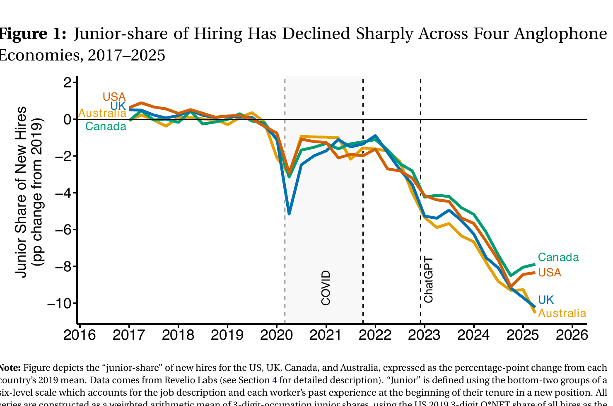
출처: Lambert & Schindler (2026), The Broken Ladder, Figure 1 (데이터: Revelio Labs)
둘째, AI 노출과 재택근무 노출은 사실상 같은 직업을 가리킵니다. 683개 세부 직업을 두 지수로 줄 세우면 순위 상관계수가 0.77입니다. 소프트웨어 개발자, 회계사, 경영 컨설턴트는 두 지수 모두 최상위입니다. 전기 기사, 청소원, 건설 노동자는 두 지수 모두 최하위입니다. 둘이 이렇게 겹치면, AI 노출 하나만 보고 분석할 때 재택근무의 효과가 AI 효과로 둔갑합니다. 이것이 통계에서 말하는 누락변수 문제입니다.
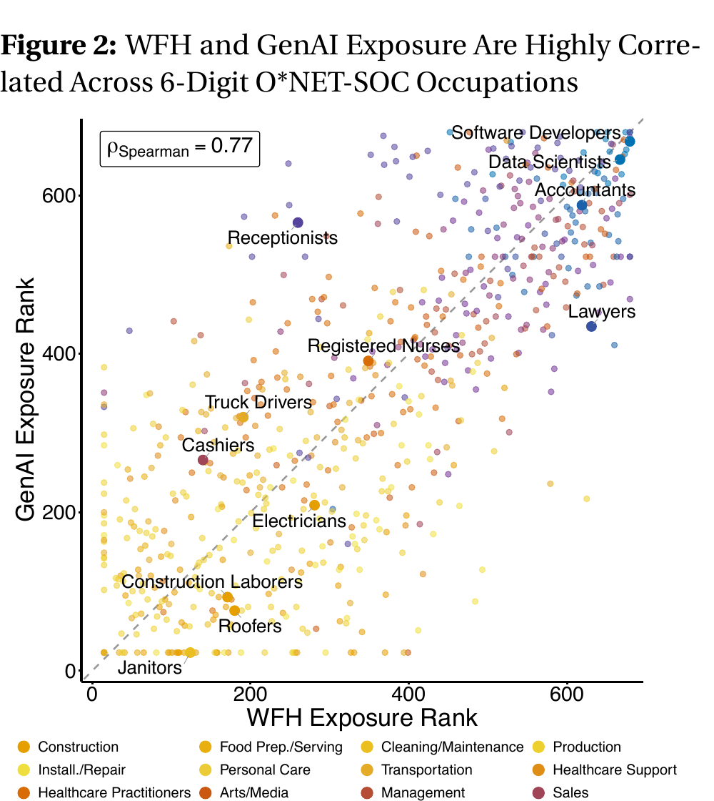
출처: Lambert & Schindler (2026), Figure 2 (재택근무: Hansen et al. 2023 / AI: Eloundou et al. 2024)
셋째, 둘을 함께 넣자 AI 효과가 무너졌습니다. 이 연구의 핵심입니다. 두 노출을 따로 넣으면 둘 다 신입 채용을 줄이는 것처럼 보입니다. 그러나 한 모형에 함께 넣으면 결과가 갈립니다. 재택근무 효과는 거의 그대로 유지되는 반면, AI 효과는 크게 줄고 통계적으로 0과 구분되지 않습니다. 채용 공고 지표에서는 AI 계수의 부호가 뒤집히기까지 합니다.
| 노출 변수 (1표준편차 증가) | 단독 투입 | 함께 투입 |
|---|---|---|
| 재택근무 노출 (지역×직업 패널) | -1.69%p *** | -1.42%p *** (유지) |
| 생성형 AI 노출 (지역×직업 패널) | -1.34%p *** | -0.41%p (유의성 소멸) |
| 재택근무 노출 (기업×직업 패널) | -1.88%p *** | -1.57%p *** (유지) |
| 생성형 AI 노출 (기업×직업 패널) | -1.59%p *** | -0.45%p (유의성 소멸) |
신규 채용 중 신입 비중에 대한 2기간 이중차분 추정(2017~2019년 대비 2023~2025년). 계수는 노출 1표준편차당 %포인트. *** p<0.01. 다중공선성 진단(분산팽창계수 2.4 이하, 조건수 2.7 이하)은 이 비대칭이 통계적 잡음이 아님을 보여줍니다. 출처: Lambert & Schindler (2026), Table 1.
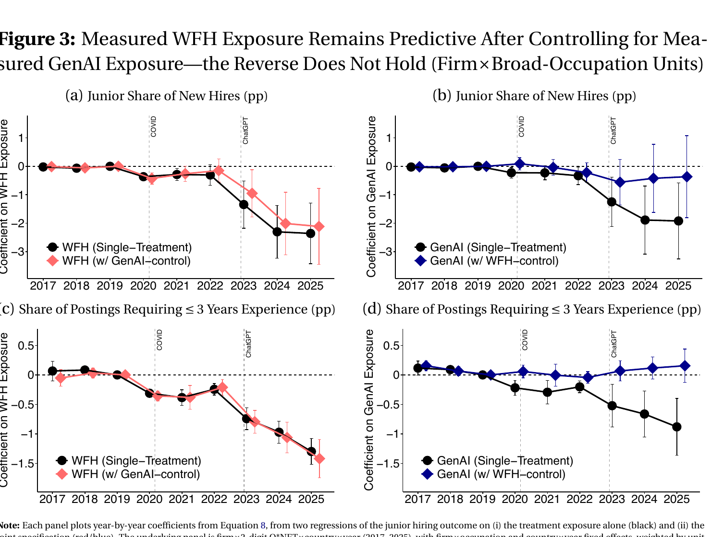
출처: Lambert & Schindler (2026), Figure 3 (기업×직업×연도 단위)
이 비대칭은 분석 단위를 바꿔도 그대로입니다. 기업 단위 대신 직업×주(state) 단위로 다시 추정해도 결론이 같습니다.
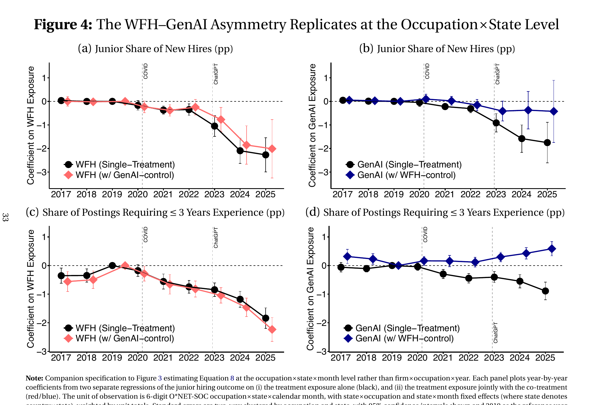
출처: Lambert & Schindler (2026), Figure 4 (직업×주×월 단위)
넷째, 숫자를 현장 언어로 옮기면 이렇습니다. 재택근무 노출이 평균보다 낮은 건설 목수와, 평균보다 높은 재무 분석가를 비교해 봅니다. 2025년 기준으로 재무 분석가 쪽 신입 채용 비중이 4~5%포인트 더 떨어졌습니다. 신규 채용 20명 중 1명이 신입에서 경력직으로 바뀐 셈입니다. 채용 공고로 보면 약 33건 중 1건이 "경력 3년 이상"으로 문턱을 올렸습니다.
다섯째, 진짜 재택근무를 도입한 기업에서도 같은 결과가 나왔습니다. 노출 지수가 아니라, 2021~2022년에 실제로 재택·하이브리드 공고를 낸 기업을 추려서 봤습니다. AI 노출과 재택 노출이 비슷한 기업끼리 짝지어 비교했습니다. 그런데도 실제 재택을 도입한 기업의 신입 채용 비중이 0.69~1.20%포인트 더 낮았습니다(p<0.01). 노출 지수의 한계를 우회한 직접 검증에서도 결론이 같습니다.
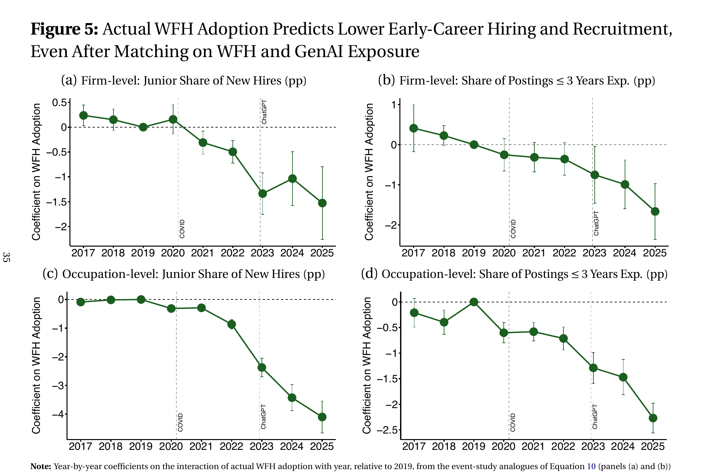
출처: Lambert & Schindler (2026), Figure 5 (AI·재택 노출 매칭 후 비교)
왜 재택근무가 신입을 밀어낼까요. 연구의 이론은 두 가지 마찰을 짚습니다. 첫째, 재택 환경은 신입을 감독하고 지도하는 비용을 높입니다. 둘째, 어깨너머 학습과 승진 속도를 늦춥니다. 신입의 가치는 지금 당장의 산출이 아니라 "길러서 경력직으로 키우는" 미래 가치에 있습니다. 그 학습 경로가 막히면 기업은 신입 대신 경력직을 뽑습니다. 별도 연구에 따르면 한 달에 단 하루 출근만으로도 신입의 생산성과 소통이 개선됩니다.
저자들은 이 결과를 "AI 비관론"보다 낙관적인 신호로 봅니다. 원인이 AI라면 거대한 구조 변화에 맞서야 합니다. 원인이 재택근무라면, 신입에 맞는 온보딩과 관리 방식을 다시 설계하는 것으로 통로를 다시 열 수 있기 때문입니다.
최근 우리 조직의 신입 채용이 줄었다면, 그 부서의 재택·하이브리드 비중이 함께 높아졌는지 확인합니다. 두 변화가 같이 일어났다면 원인은 AI가 아니라 근무 형태일 가능성이 큽니다. 원인을 바로잡아야 처방이 맞습니다. (소요 시간: 채용·근무 데이터 대조 30분)
완전 재택을 고집하기보다, 신입 입사 후 일정 기간은 주 1~2회라도 선배와 같은 공간에서 일하도록 배치합니다. 한 달에 하루 출근만으로도 신입 생산성이 오른다는 연구가 근거입니다. 온보딩 첫 분기를 "학습 집중 기간"으로 별도 설계합니다. (소요 시간: 온보딩 설계 1~2시간)
재택에서는 신입이 막혀도 선배가 눈치채기 어렵습니다. 주간 1:1, 비동기 코드·문서 리뷰, 질문 채널 같은 장치를 관리자 책임으로 명시합니다. 신입 감독 비용을 조직이 흡수하지 않으면, 채용 단계에서 신입을 거르게 됩니다. (소요 시간: 관리자 가이드 초안 1시간)
이 연구는 AI의 노동시장 영향을 부정하지 않습니다. 저자들은 "생성형 AI가 노동시장에 강한 영향을 준다는 가능성을 배제하지 않는다"고 분명히 적었습니다. 핵심 주장은 좁습니다. "직업별 노출 지수에 기반한 분석은 재택근무 효과를 AI 효과로 오인할 수 있다"는 것입니다. AI가 무해하다는 뜻이 아닙니다.
데이터는 2025년까지입니다. 분석 기간 이후 AI 도입이 더 깊어지면 효과가 커질 수 있습니다. 저자들도 "독립적으로 측정한 기업 단위 AI 도입 데이터와 더 긴 관찰 기간이 필요하다"고 후속 과제를 남겼습니다. 현재 결론을 미래까지 그대로 연장하면 안 됩니다.
영미권 4개국 데이터입니다. 미국·영국·캐나다·호주의 노동시장 결과입니다. 한국은 재택근무 보급 정도, 신입 채용 관행, 노동 규제가 다릅니다. 같은 메커니즘이 작동할 수는 있어도 수치를 그대로 옮기는 것은 과잉 해석입니다.
신입의 사다리를 부순 건 AI가 아니라, 신입을 키우기 어려워진 근무 환경일 수 있습니다. 다행히 그건 조직이 고칠 수 있는 문제입니다.
원문이 결론을 뒷받침하려고 붙인 보조 그림입니다. 본문 주장을 더 깊이 확인하고 싶은 독자를 위해 그대로 싣습니다.
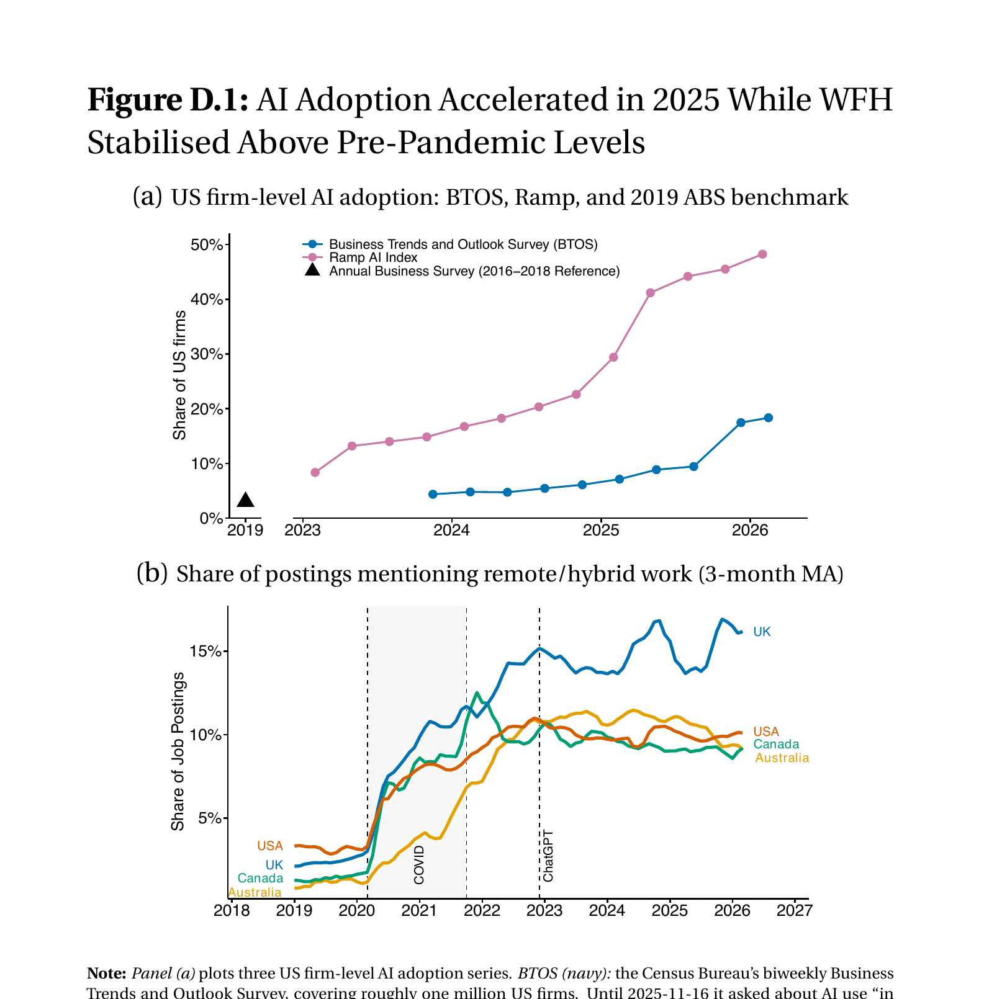
출처: Lambert & Schindler (2026), Figure D.1
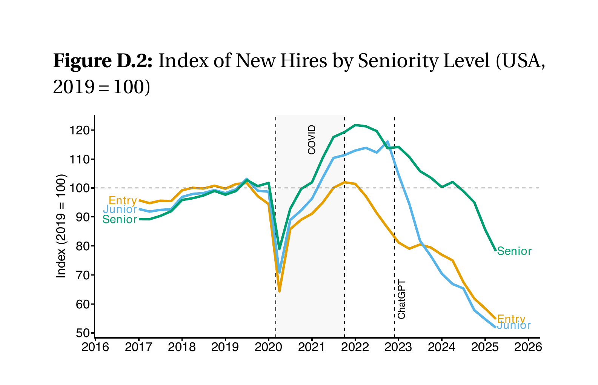
출처: Lambert & Schindler (2026), Figure D.2
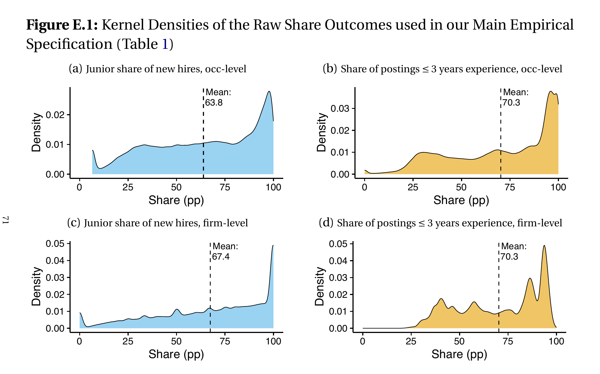
출처: Lambert & Schindler (2026), Figure E.1
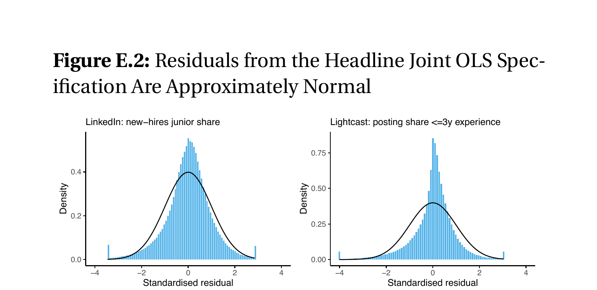
출처: Lambert & Schindler (2026), Figure E.2
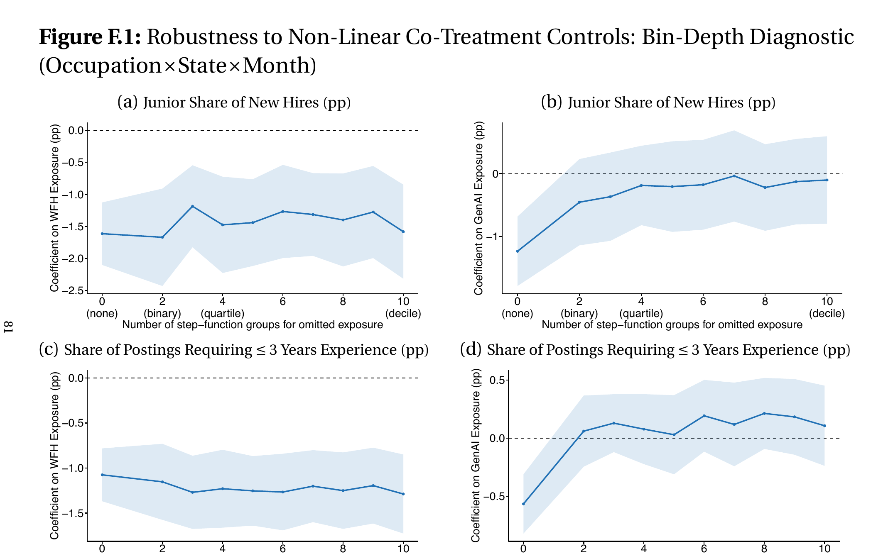
출처: Lambert & Schindler (2026), Figure F.1
재택근무 노출(WFH exposure): 해당 직업이 재택·하이브리드 근무로 수행될 수 있는 정도를 직업 단위로 지수화한 값입니다. 채용 공고가 원격 근무를 제공하는 비율로 측정합니다(Hansen et al. 2023).
생성형 AI 노출(GenAI exposure): 직업의 업무 가운데 생성형 AI로 작업 시간을 50% 이상 줄일 수 있는 과제의 비율입니다. 노출이 높을수록 AI가 그 직업의 업무를 대체·보조하기 쉽다는 뜻입니다(Eloundou et al. 2024).
신입 비중(junior share): 신규 채용 가운데 경력 초기 단계(이력서 기준 하위 2개 직급) 노동자가 차지하는 비율입니다. 이 글에서 "신입 채용 감소"는 이 비율의 하락을 뜻합니다.
누락변수 편의(omitted variable bias): 분석에서 빠진 제3의 변수가 두 변수의 관계를 왜곡하는 문제입니다. 여기서는 재택근무가 빠진 변수이며, AI 노출만 보면 재택근무 효과까지 AI 몫으로 잘못 잡힙니다.
이중차분(DiD, difference-in-differences): 충격에 더 노출된 집단과 덜 노출된 집단의 "전후 변화 차이"를 비교해 효과를 추정하는 방법입니다. 시간에 따라 공통으로 작용하는 요인을 걷어냅니다.
표준편차(1sd · 2sd): 직업 간 노출이 퍼진 정도의 단위입니다. 2표준편차 차이는 분포 양쪽 끝에 가까운 두 직업(예: 건설 목수와 재무 분석가)의 격차에 해당합니다.
- Lambert, P. J., & Schindler, Y. (2026, May). The Broken Ladder: AI, Remote Work, and Early-Career Hiring [Working paper]. SSRN. https://papers.ssrn.com/sol3/papers.cfm?abstract_id=6787638
- Hansen, S., Lambert, P. J., Bloom, N., Davis, S. J., Sadun, R., & Taska, B. (2023, March). Remote Work across Jobs, Companies, and Space [Working paper No. w31007]. National Bureau of Economic Research.
- Eloundou, T., Manning, S., Mishkin, P., & Rock, D. (2024, June). GPTs are GPTs: Labor market impact potential of LLMs. Science, 384(6702), 1306–1308.
- Brynjolfsson, E., Chandar, B., & Chen, R. (2025, November). Canaries in the Coal Mine? Six Facts about the Recent Employment Effects of Artificial Intelligence [Working paper]. Stanford Digital Economy Lab.
- Aksoy, C. G., Bloom, N., Davis, S. J., Marino, V., & Özgüzel, C. (2026, May). In-Person Contact Improves Remote-Work Performance [Working paper].